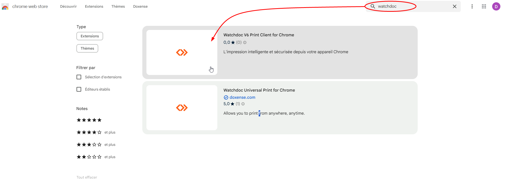
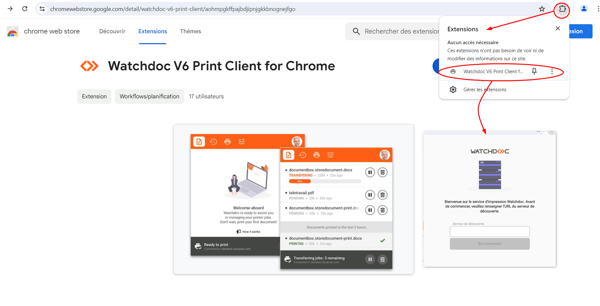
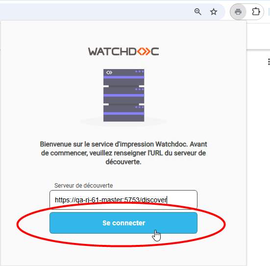
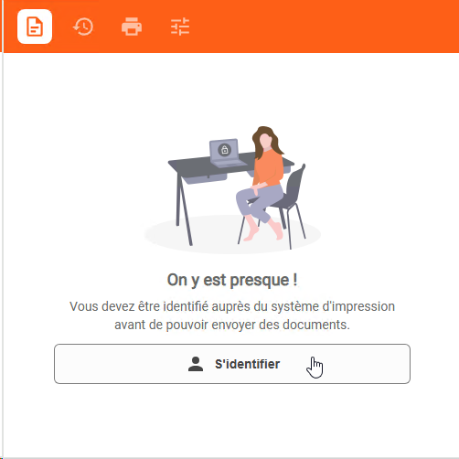
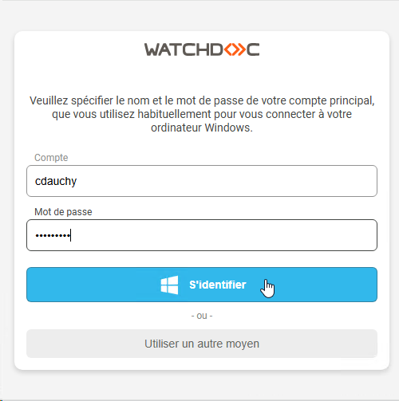
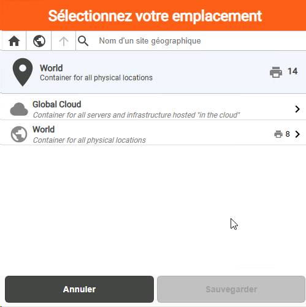
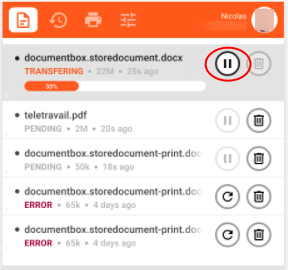
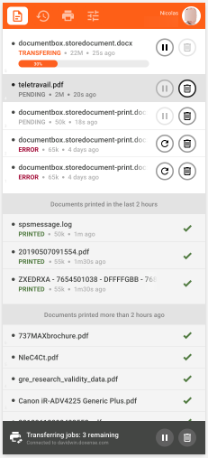

Accéder à l'extension
-
Rendez-vous dans Chrome® web store.
-
Cherchez l'extension Watchdoc.
-
Dans la liste des extensions proposées, cliquez sur Watchdoc v6 Print Client for Chrome :

-
Dans l'interface de présentation Watchdoc V6 Print Client for Chrome, cliquez sur le bouton Ajouter à Google Chrome :
-
Un message vous informe que l'extension a été ajoutée à votre navigateur Chrome ou votre Chrome Book.
-
Cliquez sur le logo extensions (en haut, à droite de votre navigateur), puis sur l'extension Watchdoc.
-
Dans l'interface de bienvenue Watchdoc affichée, saisissez l'url du serveur de découverte fournie par votre référent Watchdoc :

-
Cliquez ensuite sur Se connecter :

S'authentifier dans l'extension
Lors d'une première utilisation, une authentification est requise. Une fois cette authentification faite dans WPC for Chrome effectuée, vous n'aurez plus à la réitérer.
Exploitant le système SSO Le Single Sign-On (SSO) est une technologie permettant d’accéder à de multiples services, sites web et application avec un système d’authentification unique. Découvrez la définition, le fonctionnement, les avantages, inconvénients et meilleurs fournisseurs de SSO.
(Source : https://www.lebigdata.fr/), l'authentification s'appuie sur votre compte Google® ou sur votre compte Windows® automatiquement détecté par le navigateur Chrome. Si vous utilisez l'extension en tant qu'invité, vous devez disposer d'un code dédié à cet usage.
Le Single Sign-On (SSO) est une technologie permettant d’accéder à de multiples services, sites web et application avec un système d’authentification unique. Découvrez la définition, le fonctionnement, les avantages, inconvénients et meilleurs fournisseurs de SSO.
(Source : https://www.lebigdata.fr/), l'authentification s'appuie sur votre compte Google® ou sur votre compte Windows® automatiquement détecté par le navigateur Chrome. Si vous utilisez l'extension en tant qu'invité, vous devez disposer d'un code dédié à cet usage.
-
dans la fenêtre sélectionnez :
-
soit le compte existant à partir duquel pour voulez vous authentifier en SSO (compte Google® ou compte Windows®);
-
soit l'option d'authentification "Invité" :

-
-
dans la fenêtre d'authentification qui s'affiche :
-
saisissez votre compte et votre mot de passe, puis cliquez sur le bouton ;
-
ou saisissez le "code invité" qui vous a été donné, puis cliquez sur le bouton :

-
-
lorsque l'authentification est réussie, le bouton s'affiche, puis l'interface Sélectionnez votre emplacement :

Dans le cas contraire, réitérez l'opération d'authentification.
-
Vous pouvez aussi changer de mode d'authentification en cliquant sur le libellé "Utiliser un autre moyen".
Imprimer : présentation de l'interface
L'interface WPC for Chrome se compose de plusieurs zones :
Le menu comporte plusieurs boutons :
-
le bouton permet d'accéder à la liste des documents en attente d'impression ;
-
le bouton permet d'accéder à l'historique des transferts ;
-
le bouton permet d'accéder à la liste des périphériques d'impression disponibles dans un périmètre géographique défini ;
-
le bouton permet d'accéder aux paramètres d'impression.
-
La zone d'authentification affiche l'identité de l'utilisateur.
-
La zone d'accueil délivre un message de bienvenue et oriente l'utilisateur sur les actions possibles.
-
La zone d'état informe l'utilisateur sur l'état des périphériques d'impression et les actions en cours ("Prêt à imprimer", "Impression impossible", "Transfert des impressions en cours", "Succès du transfert", "En attente de la connexion au serveur").
L'extension WPC for Chrome peut être installée dans des contextes techniques très variés. Lors du lancement de l'impression, deux cas de figure peuvent se présenter :
-
un seul périphérique d'impression est mis à votre disposition : l'impression est effectuée en mode "direct" ;
-
plusieurs périphériques d'impression sont disponibles. Une fois l'impression lancée, vous accédez à un périphérique et y validez vos travaux : l'impression est effectuée en mode "validation".
Lancer l'impression directe
Dans le cas où il n'existe qu'un périphérique d'impression disponible :
-
depuis votre document, cliquez sur CTRL+P pour lancer l'impression ;
-
dans la fenêtre WPC for Chrome, l'unique périphérique d'impression est défini par défaut ;
-
accédez au périphérique d'impression et récupérez votre impression.
Lancer l'impression avec validation
Dans le cas où plusieurs périphériques d'impression sont disponibles :
-
rendez-vous sur le périphérique sur lequel vous souhaitez imprimer votre document ;
-
l'extension Chrome OS® transfère les documents à imprimer vers la file d'impression ;
-
authentifiez-vous sur le périphérique (à l'aide d'un badge, d'un compte ou d'un code) ;
-
les travaux d'impression sont placés dans une liste d'attente : sélectionnez le ou les travaux à imprimer et validez l'impression.
Mettre le transfert en pause
L'extension transfère les demandes d'impression au serveur d'impression configuré par défaut. Or, il peut être utile de lancer des impressions tout en souhaitant qu'elles ne soient pas traitées instantanément. Vous pouvez, dans ce cas, mettre vos demandes d'impression en pause :
-
lancez votre demande d'impression ;
-
dans la liste des documents en cours de transfert, cliquez sur le bouton correspondant au document à ne pas transférer dans l'immédiat ;

-
Lorsque vous le souhaitez, cliquez sur le bouton pour permettre la reprise du transfert.
Consulter l'historique des demandes d'impressions
Les demandes d'impressions transférées par l'extension sont conservées dans un historique que vous pouvez consulter à tout moment :
-
cliquez sur le bouton dans l'extension,
-
dans l'interface s'affichent les documents en cours de traitement et les documents traités (par ordre antéchronologique). Dans cette liste, le statut des documents s'affiche :
-
en vert lorsqu'ils ont été transférés au périphériques d'impression ;
-
en rouge lorsqu'ils n'ont pas été transmis et que la demande d'impression peut être relancée ;
-
en gris lorsqu'ils sont en attente de transfert.
-
-
cliquez sur le bouton pour relancer les documents non-transférés ;
-
ou cliquez sur le bouton pour supprimer les documents non-transférés en attente de traitement:
